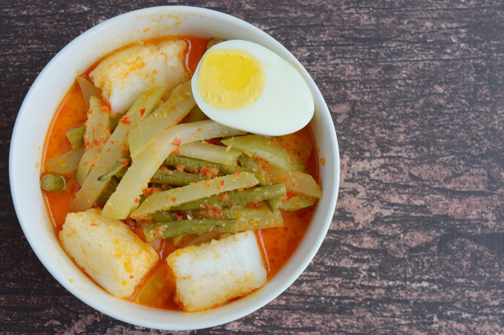

Lontong Sayur
"Lontong sayur ini biasanya ada yang gulai tauco sama gulai paku dan gulai nangka. paling enak dimakan bersama bakwan"
Sumatera Barat dikenal sebagai makanan bersantan dan rasa yang kuat, berbagai macam kuliner di Sumatera Barat memang kebanyakan sudah dikenal orang Indonesia. Sumatera Barat terdapat dua bagian yaitu darek daerah di pegunungan, dan pesisir daerah di pinggiran pantai.
Daerah darek dan pesisir masing-masing mempunyai makanan khas yang lezat. Tidak jauh beda hanya bumbu yang sedikit perbedaan takaran.
Makanan daerah pesisir biasanya mengolah ikan. Kuliner yang paling dikenal adalah gulai kepala ikan kakap dengan rasa yang tidak terlalu pedas. Berbeda dengan daerah darek, gulainya mempunyai rasa yang pedas karena bumbu lebih rempah dan rasa yang lebih kuat.
Mengapa orang darek lebih suka pedas? Karena dare adalah daerah pegunungan yang tentu saja dingin sehingga membutuhkan makanan dengan bumbu yang menghangatkan badan.
Sate padang di daerah bukittinggi dan padangpanjang memiliki kuah berwarna kuning, sementara di daerah pesisir kuahnya berwarna merah. Biasanya sate dimasak dengan kelapa.
Tak hanya itu, masakah khas Sumatera Barat yang sudah dikenal seluruh dunia adalah rendang. Makanan itu biasanya dibuat dengan daging sapi sebagai dengan ditambahkan santan kelapa. Tidak hanya daging sapi, ayam, telur dadar, belut kering, paru, dan hati juga bisa dijadikan rendang.
Yang harus diketahui bahwa rendang tak harus selalu dibuat dengan daging, karena yang namanya rendang bukan dari daging melainkan bumbunya. (uang makan, sebagai komponen gaji pns) akan dibangkitkan juga.